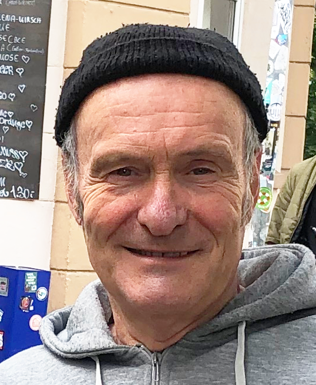

Clown Konrad ist Michael Westermeier

- geboren 1953
- Diplom Designer & Comiczeichner
- Ausbildung als Kunsttherapeut
- seit 1999 freies Theater & Improtheater und Clownerie
- 2001 auf Circustournee mit dem “Circus Maximum” in Schweden mit dem spanischen Clown Toni Alexis
- seit August 2001 Klinik-Clown in Kinderkliniken, Altenheimen und der Psychiatrie